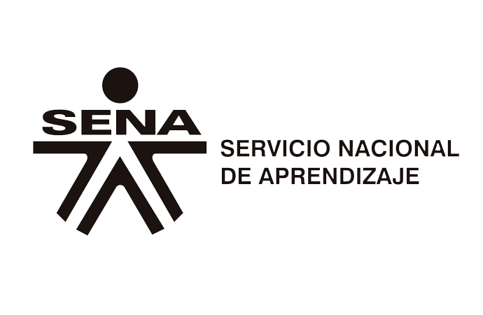

Este Es El logo
Que Representa:
El logotipo o Logo del Sena representa los caminos que el aprendiz puede tomar (las decisiones) para seguir adelante enfocadas a la formación del hombre para una buena calidad de vida,Así mismo también representa la responsabilidad que debe tener el aprendiz con su propio proceso de aprendizaje.